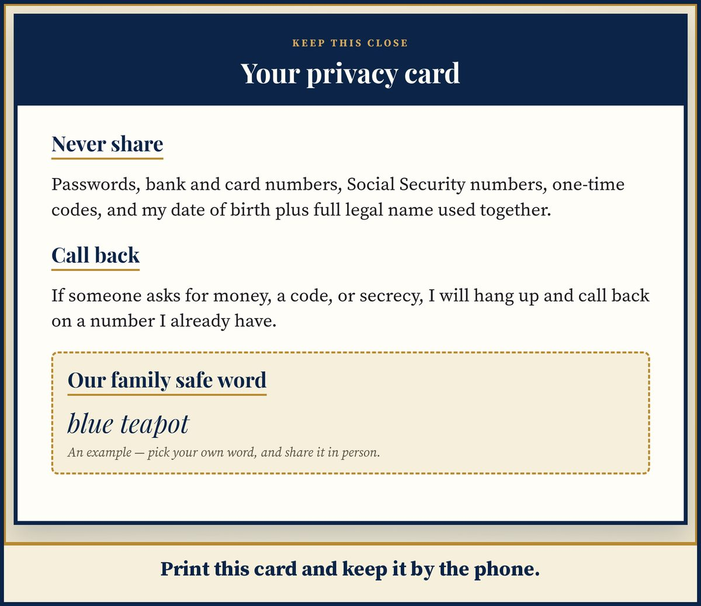

Lesson 4 of 8
Stay in charge: what you share, and what you believe
In Lesson 3, we practiced checking an answer. Today we will build a simple habit for what you share, and for what you believe.
This lesson is about calm habits, not fear. You stay in charge.
Never type these into Grok, or into any similar tool
- Passwords.
- Bank and card numbers.
- Social Security numbers.
- One-time codes, such as a number sent to your phone to prove it is you.
- Your date of birth and your full legal name used together, as if they were an ID.
A little context helps Grok help you. Those details do not. If you would not put it on a postcard, do not type it in.
What AI is good at, and what it is not
AI is good at drafting, listing, explaining, and helping you think through ideas. It is not a doctor, a lawyer, a bank, or a proof of truth.
Sometimes a tool makes something up that sounds real. The sentences can be smooth. The details can still be wrong. That is why we check anything that matters.
A short word about scams
A voice, a photo, or a message can be faked. If someone asks for money, a code, or secrecy, pause. Hang up. Call back on a number you already have, not a number from the message or the call.
The full AI Scam Shield Guide is the free, keep-by-the-phone reference for this. You can find it at thewisdomedge.com. This lesson does not replace that guide. It simply gives you one card to fill in and keep close.
A family safe word
A safe word is one odd word or phrase, agreed on in advance, that only your family uses when a request feels urgent or strange. A copied voice cannot know it. Pick something easy to remember but hard to guess, such as “blue teapot.” Share it in person, or on a call you made. Do not put it in a text or an email.
Your privacy card
Print this card, or copy it onto a small sheet, and keep it by the phone and the computer.
Never share
- Passwords
- Bank and card numbers
- Social Security numbers
- One-time codes
- My date of birth and full legal name used together, as if they were an ID
Call back
If someone asks for money, a code, or secrecy, I will hang up and call back on a number I already have. I will not use a number from the message or the call.
Our family safe word
Share the word in person, or on a call you made. Do not put it in a text or an email. Keep the word in your memory, not on this card if the card sits out by the phone.
Who knows our word
The full AI Scam Shield Guide, free at thewisdomedge.com, is the keep-by-the-phone reference for warning signs and official numbers.

Try it today
Fill in the privacy card. Write your “never share” reminders, the callback rule, and, if you wish, a family safe word. Put the card where you use the phone and the computer. If you like, tell one family member about the safe word.
This course does not give legal, financial, or medical advice. For the full set of warning signs and official numbers, keep the free Scam Shield guide handy.